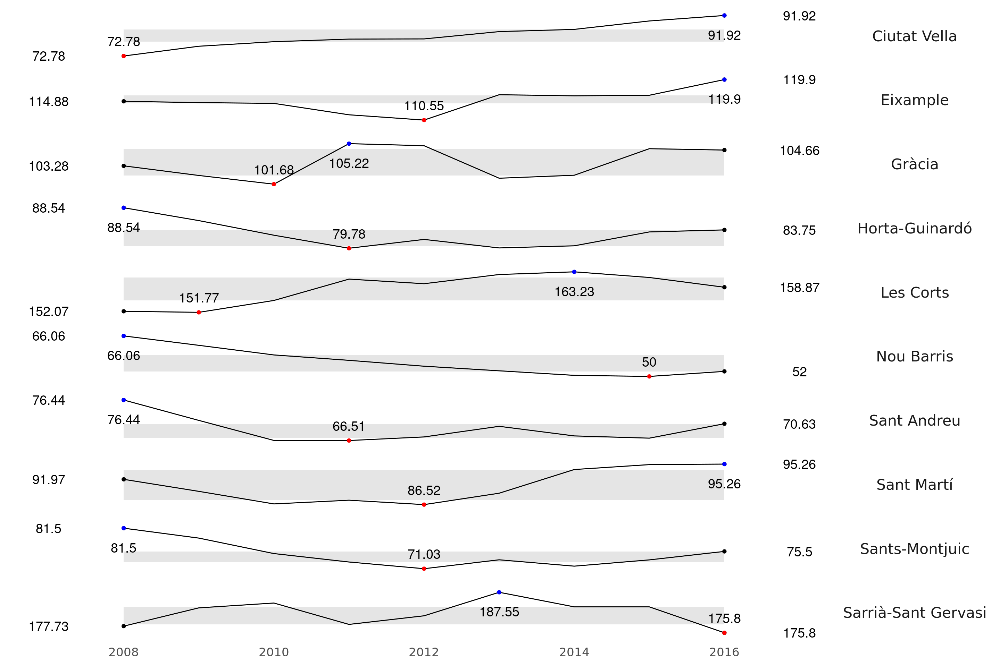
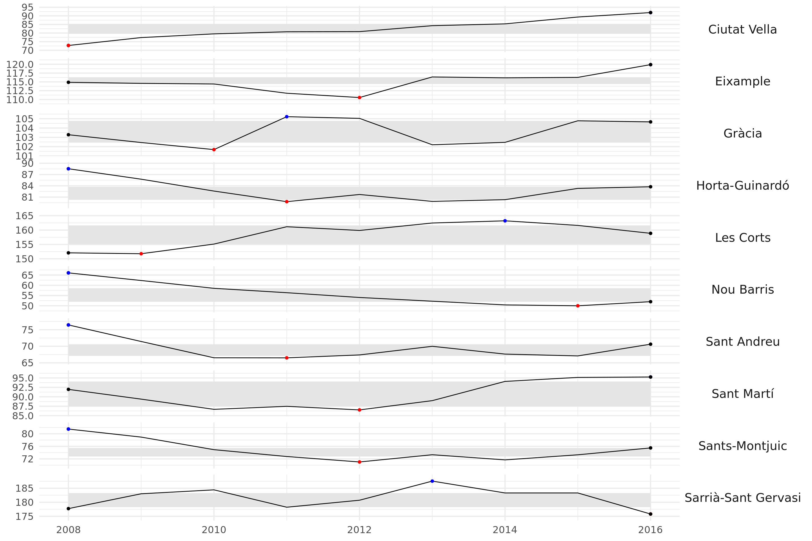
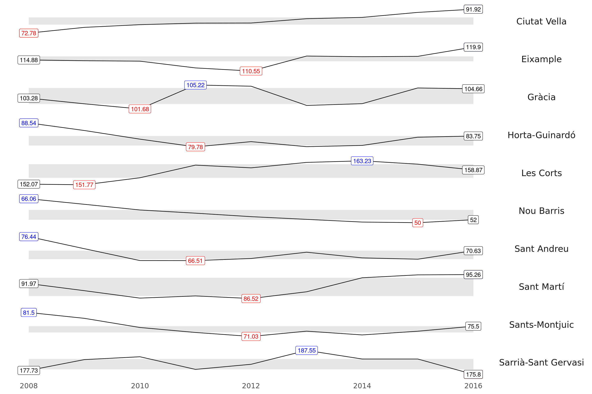

Show the code
library(tidyverse)
library(ggthemes)Marc Bosch
January 3, 2023
El primer dimarts de l’any, la iniciativa Tidy Tuesday convida a tothom a fer una visualització amb les seves pròpies dades. En aquest cas, faig servir unes dades de l’Índex de Renda Familiar per barris de l’Ajuntament de Barcelona. Aquest indicador és un índex sintètic resultat de la combinació de 5 indicadors que estima la renda disponible mitjana de les famílies residents a l’àrea analitzada. Es presenta en format de raó entre la renda de l’àrea i la mitjana per al conjunt de Barcelona (100). A major valor de l’índex, major capacitat econòmica de l’àrea.
Els indicadors que formen l’índex de RFD són: (1) La taxa de persones amb titulació superior; (2) La taxa d’atur; (3) El nombre de turismes per 1.000 habitants; (4) El percentatge de turismes nous d’elevada potència sobre el total de turismes nous; (5) El preu dels habitatges de segona mà.
r_2016 <- read_csv2("/home/marc/Documents/postgrau UB/Sessio_4/data/rfd_barcelona_2016.csv")
r_0815 <- read_csv2("/home/marc/Documents/postgrau UB/Sessio_4/data/rfd_08_15.csv",
locale = locale(encoding = "ISO-8859-1"))
r_0815 <- r_0815 |>
mutate(num.barri = as.numeric(str_extract(barri, "\\d+"))) |>
select(-barri)
r <- left_join(r_2016, r_0815, by = "num.barri")
groups <- r |>
select(-num.barri, -Poblacio.16) |>
pivot_longer(cols = -c(nom.barri, districte), values_to = "renda", names_to = "any") |>
mutate(any = as.numeric(paste0("20", str_remove(any, regex("rfd\\.", ignore_case =TRUE))))) |>
group_by(districte, any) |>
summarise("renda" = round(mean(renda, na.rm = TRUE),2)) |>
ungroup() |>
mutate(districte = case_when(districte == 1 ~ "Ciutat Vella",
districte == 2 ~ "Eixample",
districte == 3 ~ "Sants-Montjuic",
districte == 4 ~ "Les Corts",
districte == 5 ~ "Sarrià-Sant Gervasi",
districte == 6 ~ "Gràcia",
districte == 7 ~ "Horta-Guinardó",
districte == 8 ~ "Nou Barris",
districte == 9 ~ "Sant Andreu",
TRUE ~ "Sant Martí"))
knitr::kable(head(groups), style = "pipe")| districte | any | renda |
|---|---|---|
| Ciutat Vella | 2008 | 72.78 |
| Ciutat Vella | 2009 | 77.38 |
| Ciutat Vella | 2010 | 79.53 |
| Ciutat Vella | 2011 | 80.75 |
| Ciutat Vella | 2012 | 80.85 |
| Ciutat Vella | 2013 | 84.30 |
La visualització que he triat és el que s’anomena un Sparkplot. Una visualització molt utilitzada pel politòleg Edward Tufte, que consisteix a fer una sèrie de gràfics de línies per les diferents unitats estudiades (en aquest cas, districtes) on es veu l’evolució de la variable que ens interessa (Índex de Renda Familiar). Per cada línia s’indica el rang entre el primer i el tercer quartil amb una àrea grisa i es marquen amb punts i etiquetes el primer valor, l’últim, el màxim i el mínim. Això ens permet eliminar el text de l’eix de les y i les línies auxiliars que fem servir normalment per a ubicar els valors de cada punt. Així, el gràfic queda més net i hi ha menys “soroll de fons”.
La metodologia per fer aquest gràfic està treta d’aquí.
beg <- group_by(groups, districte) |> filter(any == min(any))
mins <- group_by(groups, districte) |> slice(which.min(renda))
maxs <- group_by(groups, districte) |> slice(which.max(renda))
ends <- group_by(groups, districte) |> filter(any == max(any))
quarts <- groups |>
group_by(districte) |>
summarize(quart1 = quantile(renda, 0.25),
quart2 = quantile(renda, 0.75)) |>
right_join(groups)
ggplot(groups, aes(x = any, y = renda)) +
geom_ribbon(data = quarts, aes(ymin = quart1, max = quart2), fill = 'grey90') + # rang quartils
geom_line() +
geom_point(data = ends) +
geom_point(data = beg) +
geom_point(data = mins, col = "red") +
geom_point(data = maxs, col = "blue") +
geom_text(data = mins, aes(label = renda), vjust = -1,size = 5) +
geom_text(data = maxs, aes(label = renda), vjust = 2.5, size = 5) +
geom_text(data = ends, aes(label = renda), nudge_x = 1, size = 5) +
geom_text(data = beg, aes(label = renda), nudge_x = -1, size = 5) +
scale_x_continuous(breaks = seq(2008, 2016, 2)) +
scale_y_continuous(expand = c(0.2, 0)) +
theme_tufte(base_family = "Montserrat", base_size = 16) +
theme(axis.title=element_blank(),
axis.text.y = element_blank(),
axis.ticks = element_blank(),
strip.text.y = element_text(angle = 0, size = 16), # això fa que les etiquetes surtin en horitzontal - important
text = element_text(family = "Montserrat")) +
facet_grid(districte ~ ., scales = "free_y")
El problema, com veieu al codi, és que vol moltes línies de codi: una per cada punt i una per cada etiqueta. Per tant, val la pena intentar-ho simplificar. La llibreria ggplot2 funciona amb un sistema una mica complicat d’objectes anomenats ggproto que es fan servir per crear funcions que dibuixin els gràfics. Per tant, ara en crearem un que assenyali l’inici, el final, el màxim i el mínim per cada districte amb punts.
SparkPoints <- ggproto("SparkPoints", Stat,
required_aes = c("x", "y", "group"),
compute_group = function(data, scales){
min <- data |>
group_by(group) |>
slice(which.min(y)) |>
mutate(colour = "red")
max <- data |>
group_by(group) |>
slice(which.max(y)) |>
mutate(colour = "blue")
start <- data |>
group_by(group) |>
filter(x == min(x)) |>
mutate(colour = "black")
finish <- data |>
group_by(group) |>
filter(x == max(x)) |>
mutate(colour = "black")
grid <- bind_rows(start, min, max, finish)
grid
}
)
stat_sparkpoints <- function(mapping = NULL, data = NULL, geom = "point",
position = "identity", show.legend = TRUE,
inherit.aes = TRUE){
layer(stat = SparkPoints, data = data, mapping = mapping, geom = geom,
position = position, show.legend = show.legend, inherit.aes = inherit.aes)
}ggplot(groups, aes(x = any, y = renda)) +
geom_ribbon(data = quarts, aes(ymin = quart1, max = quart2), fill = 'grey90') + # rang quartils
geom_line() +
stat_sparkpoints(aes(group = districte)) +
scale_x_continuous(breaks = seq(2008, 2016, 2)) +
scale_y_continuous(expand = c(0.2, 0)) +
theme_minimal(base_family = "Montserrat", base_size = 16) +
theme(axis.title=element_blank(),
strip.text.y = element_text(angle = 0, size = 16), # això fa que les etiquetes surtin en horitzontal - important
text = element_text(family = "Montserrat")) +
facet_grid(districte ~ ., scales = "free_y")
Problema, no ens surten les etiquetes i ens obliga a posar números a l’eix de les y, que fa el gràfic atapeït i de mal llegir. Això ho podem resoldre (més o menys, posant línies horitzontals i verticals que ens permetin ubicar els valors dins l’eix de coordenades), però també fa que el gràfic quedi atapeït, i trenquem els principis de Tufte. Una possible solució és posar només etiquetes al lloc dels punts, amb l’avantatge que un mateix objecte ens permet dibuixar o bé punts o bé etiquetes canviant el paràmetre geom quan dibuixem el gràfic. Vegem-ho.
SparkLabels <- ggproto("SparkLabels", Stat,
required_aes = c("x", "y", "group"),
compute_group = function(data, scales){
min <- data |>
group_by(group) |>
slice(which.min(y)) |>
mutate(label = y,
colour = "red")
max <- data |>
group_by(group) |>
slice(which.max(y)) |>
mutate(label = y,
colour = "blue")
start <- data |>
group_by(group) |>
filter(x == min(x)) |>
mutate(label = y,
colour = "black")
finish <- data |>
group_by(group) |>
filter(x == max(x)) |>
mutate(label = y,
colour = "black")
grid <- bind_rows(start, min, max, finish)
grid
}
)
stat_sparklabels <- function(mapping = NULL, data = NULL, geom = "label",
position = "identity", show.legend = TRUE,
inherit.aes = TRUE){
layer(stat = SparkLabels, data = data, mapping = mapping, geom = geom,
position = position, show.legend = show.legend, inherit.aes = inherit.aes)
}ggplot(groups, aes(x = any, y = renda)) +
geom_ribbon(data = quarts, aes(ymin = quart1, max = quart2), fill = 'grey90') + # rang quartils
geom_line() +
stat_sparklabels(aes(group = districte)) +
scale_x_continuous(breaks = seq(2008, 2016, 2)) +
scale_y_continuous(expand = c(0.2, 0)) +
theme_tufte(base_family = "Montserrat", base_size = 16) +
theme(axis.title=element_blank(),
axis.text.y = element_blank(),
axis.ticks = element_blank(),
strip.text.y = element_text(angle = 0, size = 16), # això fa que les etiquetes surtin en horitzontal - important
text = element_text(family = "Montserrat")) +
facet_grid(districte ~ ., scales = "free_y")
ggplot(groups, aes(x = any, y = renda)) +
geom_ribbon(data = quarts, aes(ymin = quart1, max = quart2), fill = 'grey90') + # rang quartils
geom_line() +
stat_sparklabels(aes(group = districte), geom = "point") +
scale_x_continuous(breaks = seq(2008, 2016, 2)) +
scale_y_continuous(expand = c(0.2, 0)) +
theme_minimal(base_family = "Montserrat", base_size = 16) +
theme(axis.title=element_blank(),
strip.text.y = element_text(angle = 0, size = 16), # això fa que les etiquetes surtin en horitzontal - important
text = element_text(family = "Montserrat")) +
facet_grid(districte ~ ., scales = "free_y")geom = 'point'Finalment, també podem crear un objecte per dibuixar els rangs interquartils.
InterquartileRange <- ggproto("InterquartileRange", Stat,
required_aes = c("group"),
compute_group = function(data, scales, fill = "gray90"){
grid <- data |>
group_by(group) |>
summarise(ymin = quantile(y, 0.25),
ymax = quantile(y, 0.75)) |>
right_join(data) |>
mutate("fill" = fill)
grid
}
)
stat_interquartilerange <- function(mapping = NULL, data = NULL, geom = "ribbon",
position = "identity", show.legend = TRUE,
inherit.aes = TRUE, fill = "gray90"){
layer(stat = InterquartileRange, data = data, mapping = mapping, geom = geom,
position = position, show.legend = show.legend, inherit.aes = inherit.aes,
params = list(fill = fill))
}ggplot(groups, aes(x = any, y = renda)) +
stat_interquartilerange(aes(group = "districte"), fill = "gray90") + # rang quartils
geom_line() +
stat_sparklabels(aes(group = districte)) +
scale_x_continuous(breaks = seq(2008, 2016, 2)) +
scale_y_continuous(expand = c(0.2, 0)) +
theme_tufte(base_family = "Montserrat", base_size = 16) +
theme(axis.title=element_blank(),
axis.text.y = element_blank(),
axis.ticks = element_blank(),
strip.text.y = element_text(angle = 0, size = 16), # això fa que les etiquetes surtin en horitzontal - important
text = element_text(family = "Montserrat")) +
facet_grid(districte ~ ., scales = "free_y")geom = 'point'. Rang interquartil creat amb l’objecte InterquartileRangeI ja ho tenim. Dos stats que ens permeten generar elements com un rang interquartil o etiquetes pels valors més interessants sense necessitat de crear noves taules ni més línies de codi del compte. De tot això en faré un paquet un cop controli que funciona bé amb altres dades per no haver de repetir les funcions cada vegada.